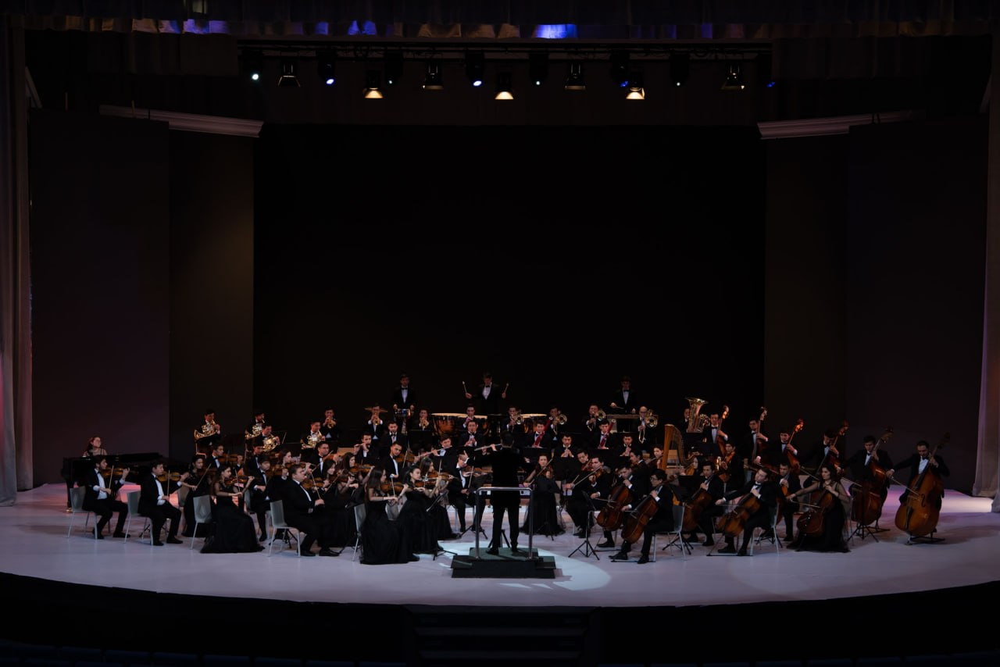

Talabalar Hayoti
Dars jadvallari, grantlar, HEMIS tizimi va online kutubxonadan foydalanish imkoniyatlari.

Musiqa san'atining buyuk o'tmishi va porloq kelajagi tutashgan maskan.
Boy tarixga ega bo'lgan bilim dargohimizning o'tmishi va bugungi kungi salohiyati haqida ma'lumot.